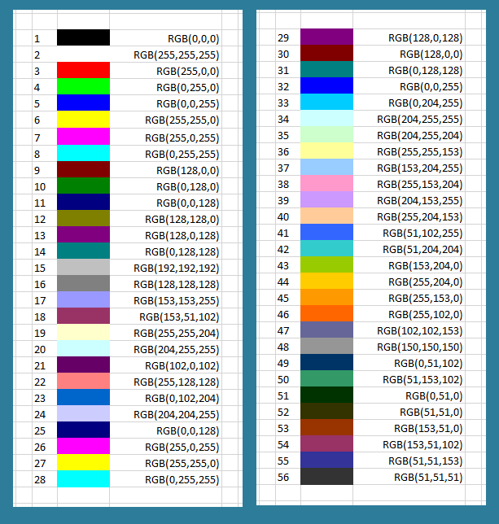

Segmenting White Blood Cells
Image segmentation and the RGB color model
We begin our work by programming a computer to “see” a stained WBC nucleus within a larger image containing RBCs, like the one in the figure below, reproduced from the introduction. The more general problem of identifying objects within an image is called segmentation.
The granulocyte presented in the introduction (having ID 3 in our dataset).
Many different approaches for image segmentation have been developed, but no one has yet developed a single algorithm that could be used in all contexts. We therefore will apply a maxim that is more general than its application to biological modeling and that will recur throughout this module, which is to identify the key features special to this dataset, and then convert these features into instructions that a computer can follow.
In particular, we ask ourselves what makes the WBC nucleus so easy for a human to spot in the blood cell images. You may be screaming already, “It is dark purple!” And this is a very good idea. But to train a computer to segment images by color, we need first to understand how the computer represents color in images.
In the RGB color model, every rectangular pixel on a computer screen receives a solid color which is formed as a mixture of the three primary colors of light: red, green, and blue (hence the acronym “RGB”). The amount of each color in a pixel is expressed as an integer between 0 and 255, respectively, where larger integers correspond to larger amounts of the color. Some simple colors are shown in the figure below along with their RGB equivalents; for example, magenta corresponds to equal parts red and blue. Note that a color like (128, 0, 0) contains only red but appears duskier than (256, 0, 0) because the red has not been “turned on” fully.

A collection of colors along with their RGB codes. Note that this table corresponds to mixing colors of light instead of pigment, which causes some strange effects; for example, yellow is formed by mixing equal parts red and green, and cyan is formed by mixing equal parts blue and green. The last six colors appear muted because they only receive half of a given color value compared to a color that receives 256 units. If all three colors are mixed in equal proportions, then we obtain a color on the gray scale between white (maximum amounts of the colors) and black (no color). Source: Excel at Finance.
This observation gives us an idea for finding a WBC nucleus. Why don’t we scan through the pixels in a blood cell image and determine the amounts of each primary color in different parts of the image? We can then “turn off” any pixels whose color codes are not similar to the pixels inside the nucleus.
STOP: You can find a color picker in Utilities > Digital Color Meter (Mac OS X) or by using ShareX (Windows). Open your color picker, and hover the picker over different parts of the the granulocyte image above. What are the typical RGB values for the WBC nucleus, and how do these RGB values differ from other parts of the cell?
Binarizing an image based on a color threshold
When using a color picker, we see that a stained WBC nucleus has more blue than the surrounding RBCs, which is unsurprising. We can then binarize our image by turning a pixel white if its blue value is above some threshold and turning a pixel black if its blue value is beneath some threshold. The result for a threshold value of 153 is shown in the figure below. We can’t clearly see the WBC nucleus in this binarized image because although the nucleus has high blue values, so does the whitish background of the image (remember that colors close to white are formed by mixing high percentages of red, green, and blue).
A binarized version of our granulocyte from the introduction (having image ID 3 in our dataset). A pixel is colored black if it has a blue channel value of 153 or greater, and the pixel is colored black otherwise. The region with the nucleus is shown in white but is not clearly visible because much of the background of the image, which is very light, also has a high red value (remember that mixing all three colors in equal proportions yields white).
STOP: How might we modify our segmentation approach to perform a binarization that identifies the WBC nucleus more effectively?
Before we give up, let’s consider the other two primary colors. The blue channel was unable to distinguish between the image background and the WBC nucleus, but you can verify with a color picker that the green content of nuclear pixels is typically much lower than the background. The WBC nucleus also tends to have a lower red content than both the RBCs and the background. So, if we binarize the original image using a green threshold and then (separately) a red threshold, we obtain the two images in the figure below.
Two more binarized versions of the neutrophil image from the figure above (left), based on the green and red values. For both of these colors, the WBC nucleus tends to have lower values than other parts of the original image. (Left) A binarization in which a pixel is turned white if it has a green value less than or equal to 153. (Right) A binarization in which a pixel is turned white if it has a red value less than or equal to 166.
We have found a signal! It would seem that we should work with the image based on the red threshold, since the nucleus there is the clearest. However, each threshold was able to eliminate unnecessary parts of the image from consideration. For example, note the white blob in the top left of the binarized image based on the red channel. Although the red channel did not exclude this area, the blue channel did; this same region is black in the preceding figure.
This insight gives us an idea; let’s produce a fourth image for which a pixel is white only if it is white in all three binarized images. In the following tutorial, we will build an R pipeline that does just this for all of our blood cell images to produce binarized WBC nuclei.
Successful segmentation is subject to parameters
If you followed the above tutorial, then you might be tempted to celebrate, since it seems that we have resolved our first main objective of identifying WBCs. Now that we can identify WBCs, this means that we can count the number of WBCs in a given sample without the need for any human labor.
Indeed, if we segment all of the images in the dataset via the same process, then we typically obtain a nice result, as indicated in the figure below for the monocyte and lymphocyte example images presented in the introduction.
Image segmentation of the monocyte (left) and lymphocyte (right) corresponding to IDs 15 and 20 in the provided dataset.
Yet this is not to say that our segmentation pipeline is perfect; the figure below illustrates that we may not correctly parse out all of the nucleus.
(Left) An image of a WBC (ID: 167) whose nucleus is not correctly identified during segmentation (right) using the parameters from the tutorial.
STOP: Play around with the threshold parameters for red, green, and blue values from the tutorial. Can you find a better choice of parameters? How should we quantify whether one collection of parameters is better than another?
We can continue to tweak our threshold parameters, but you can verify that our relatively simple segmentation program has successfully excised most of the WBC nuclei from our dataset. We now will move on to our second goal of classifying the WBC nuclei into the three main families constituting WBCs.